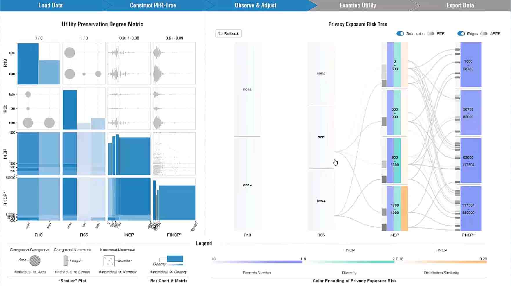

A Utility-aware Visual Approach for Anonymizing Multi-attribute Tabular Data
Xumeng Wang, Jia-Kai Chou, Wei Chen, Huihua Guan, Wenlong Chen, Tianyi Lao, and Kwan-Liu Ma
IEEE Transactions on Visualization and Computer Graphics (in Proceedings of IEEE VAST 2017), 24(1):351-360, 2018
Download Paper
Aiding Infection Analysis and Diagnosis Through Temporally-Contextualized Matrix Representations
Maksim Gomov, Jia-Kai Chou, Kelvin Li, Soman Sen, Kiho Cho, Nam Tran, and Kwan-Liu Ma
In Proceedings of IEEE VIS 2017 Workshop on Visual Analytics in Healthcare
Download Paper
Privacy Preserving Visualization for Social Network Data with Ontology Information
Jia-Kai Chou, Chris Bryan, and Kwan-Liu Ma
In Proceedings of IEEE Pacific Visualization Symposium (PacificVis).
April, 2017
Download Paper
| Video

Aiding Infection Analysis and Diagnosis Through Temporally-Contextualized Matrix Representations
Takanori Fujiwara, Jia-Kai Chou, Andrew M. McCullough, Charan Ranganath, and Kwan-Liu Ma
In Proceedings of IEEE Pacific Visualization Symposium (PacificVis)
April, 2017
Download Paper
| Project Page
| Video
Privacy Preserving Event Sequence Data Visualization using a Sankey Diagram-like Representation
[Best Paper - Honorable Mention Award]
Jia-Kai Chou, Yang Wang, and Kwan-Liu Ma
In Proceedings of Siggraph Asia 2016 Symposium on Visualization
December, 2016
Download Paper
A Study of using Motion for Comparative Visualization
Chien-Hsin Hsueh, Jia-Kai Chou and Kwan-Liu Ma
In Proceedings of 2016 IEEE Pacific Visualization Symposium (PacificVis)
Download Paper
An Interactive Visual Analysis Tool for Cellular Behavior Studies using Large Collections of Microscopy Videos
Chuan Wang, Jia-Kai Chou Kwan-Liu Ma, Arpad Karsai, Ying X. Liu, Evgeny Ogorodnik, Victoria Tran, and Gang-Yu Liu
The Second IEEE International Conference on Multimedia Big Data (BigMM 2016)
4, 2016
Project Page
| Demo Video
| Paper Presentation
A Design Study of Personal Bibliographic Data Visualization
Tsailing Fung, Jia-Kai Chou and Kwan-Liu Ma
In Proceedings of 2016 IEEE Pacific Visualization Symposium (PacificVis)
2016, pp. 244-248
Download Paper | Project Page
High Performance Heterogeneous Computing for Collaborative Visual Analysis
Kelvin Li, Jia-Kai Chou and Kwan-Liu Ma
In Proceedings of SIGGRAPH Asia 2015 Visualization in High Performance Computing
ACM, 11, 2015, pp. 12:1--12:4
Download Paper

Encryption Domain Content-based Image Retrieval and Convolution through a Block-based Transformation Algorithm
Jia-Kai Chou, Chuan-Kai Yang, and Hsing-Ching Chang
Multimedia Tools and Applications
Volume 75, Number 21, November, 2016, pp. 13805-13832
Download Paper
Obfuscated Volume Rendering
Jia-Kai Chou and Chuan-Kai Yang
The Visual Computer
Volume 32, Number 12, 2016, pp. 1593-1604
Download Paper
Simulation of Face/Hairstyle Swapping in Photographs with Skin Texture Synthesis
Jia-Kai Chou and Chuan-Kai Yang
Multimedia Tools and Applications
Volume 63, Number 3, Apr., 2013, pp. 729-756
Download Paper
A Study on Enhancing Timeline-Like Visualization with Verbal Text
Jia-Kai Chou, Isaac Liao, Kwan-Liu Ma, and Chuan-Kai Yang
In Proceedings of Proceedings of the 2013 International Conference on Cyberworlds
2013, pp. 206--213
Download Paper
Face-off: Automatic Alteration of Facial Features
Jia-Kai Chou, Chuan-Kai Yang, and Sing-Dong Gong
Multimedia Tools and Applications
Volume 56, Number 3, Feb. , 2012, pp. 569--596
Download Paper
PaperVis: Literature Review Made Easy
Jia-Kai Chou and Chuan-Kai Yang
In Proceedings of Proceedings of the 13th Eurographics / IEEE - VGTC Conference on Visualization
2011, pp. 721--730
Download Paper
{kind=link}
{kind=link}
{kind=link}
{kind=link}
{kind=link}
{kind=link}
{kind=link}
{kind=link}
{kind=link}
{kind=link}
{kind=link}
{kind=link}
{kind=link}